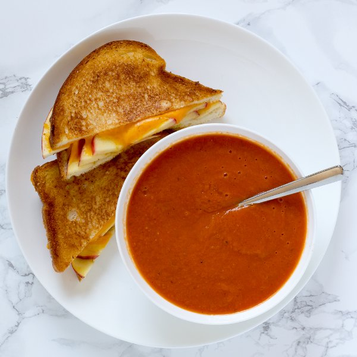

Apple-Cheddar Grilled Cheese Sandwiches with Tomato Soup

Total Time
45 min
Nutrition (per serving)
610.4 kcalCalories
26.6 gProtein
53.2 gCarbs
34.4 gFat
Full nutrition table
| Calories | 610.4 kcal |
| Total fat | 34.4 g |
| Saturated fat | 19.1 g |
| Trans fat | 1.2 g |
| Cholesterol | 88.4 mg |
| Sodium | 719.4 mg |
| Carbohydrates | 53.2 g |
| Fiber | 10.6 g |
| Sugars | 19 g |
| Protein | 26.6 g |
| Potassium | 858.4 mg |
| Calcium | 581.2 mg |
| Iron | 3.5 mg |
| Vitamin A | 1524.1 IU |
| Vitamin C | 33.1 mg |
| Vitamin D | 22.1 IU |
Cookware
Ingredients
- 1 (8 oz) blockcheddar cheese
- 16 fl ozchicken or vegetable broth
- 2 (14.5 oz) cansdiced tomatoes
- 2Gala apples
- 4 clovesgarlic
- 8 sliceswhole grain bread
- 1 mediumyellow onion
- black pepper
- butter, unsalted
- oregano, dried
- salt
Steps
- Wash and dry the fresh produce.2 Gala apples
- Quarter the apples lengthwise, then cut out the core and stem from each section. Cut 2 of the quarters lengthwise into thin wedges and transfer to a small bowl. Medium dice the other 2 quarters and transfer to a medium bowl.
- Trim off and discard the ends of the onion and remove the outer layer; small dice the onion (cut into ¼-inch pieces) and add to the bowl with the apples.1 medium yellow onion
- Preheat a medium saucepan over medium heat.
- Trim off and discard the root ends of the garlic; peel and mince or press the garlic. Add to the bowl with the apples and onion.4 cloves garlic
- Once the saucepan is hot, add butter and swirl to coat the bottom.2 tbsp butter, unsalted
- Add the apples, onion, and garlic to the saucepan; season with oregano, salt, and pepper. Cook, stirring frequently, until the apples and onion are softened, 4 to 6 minutes.1 tsp dried oregano
½ tsp salt
¼ tsp black pepper - Coarsely grate 2 cups of cheddar.1 (8 oz) block cheddar cheese
- Add the diced tomatoes and broth to the saucepan; season with additional salt and pepper. Bring the mixture to a boil, then reduce the heat to a simmer and cook for 8 to 10 minutes.2 (14.5 oz) cans diced tomatoes
16 fl oz (2 cups) chicken or vegetable broth
½ tsp salt
¼ tsp black pepper - Add butter to a nonstick skillet and heat over medium-low heat.1 tbsp butter, unsalted
- Place the bread slices on a clean, dry work surface. Divide the apple slices and cheese between 4 of the bread slices, then top with the remaining bread slices.8 slices whole grain bread
- Once melted, spread the butter around the skillet, then season the bottom of the skillet with salt.¼ tsp salt
- Place the sandwiches in the skillet and cook until golden brown and crispy on the first side, 3 to 4 minutes. Then, add more butter and salt, and carefully flip the sandwiches; cook until golden brown on the other side and the cheese has melted, 3 to 4 minutes. Once done, transfer to a cutting board. Cook in batches if necessary.1 tbsp butter, unsalted
¼ tsp salt - Using a hand blender, purée the soup until smooth. Alternatively, use a potato masher to mash the tomatoes and apples (the soup will be chunkier).
- Cut the grilled cheese sandwiches in half diagonally.
- To serve, divide the soup between small bowls and serve with the grilled cheese on the side. Enjoy!